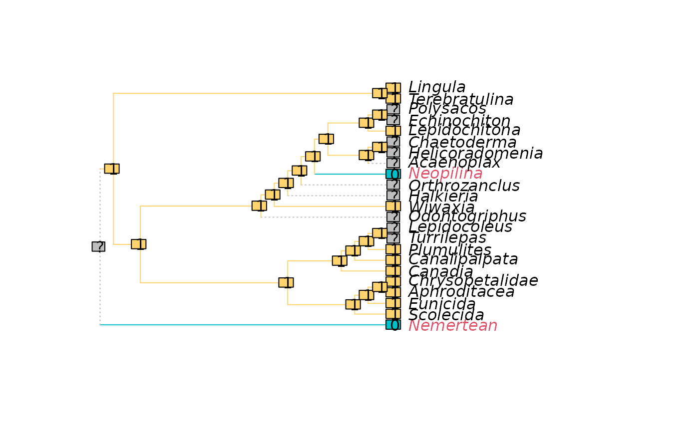

Would tree lengths change if a character was coded as ambiguous for each leaf (Pol and Escapa 2009) ?
Arguments
- trees
List of trees of class
phylo, ormultiPhyloobject.- char
phyDatobject containing a single character.- concavity
Determines the degree to which extra steps beyond the first are penalized. Specify a numeric value to use implied weighting (Goloboff 1993) ;
concavityspecifies k in k / e + k. A value of 10 is recommended; TNT sets a default of 3, but this is too low in some circumstances (Goloboff et al. 2018; Smith 2019) . Better still explore the sensitivity of results under a range of concavity values, e.g.k = 2 ^ (1:7). SpecifyInfto weight each additional step equally, (which underperforms step weighting approaches (Goloboff et al. 2008; Goloboff et al. 2018; Goloboff and Arias 2019; Smith 2019) ). Specify"profile"to employ an approximation of profile parsimony (Faith and Trueman 2001) .
Value
LengthAdded() returns a named numeric vector listing the mean
absolute change to tree length resulting if the character were coded
ambiguous for each leaf in turn, under the specified concavity constant.
Details
High values for a leaf indicate that its coding contributes to instability ("wildcard" or "roguish" behaviour; see Rogue for further details). The coding is in tension with other data, which may indicate that the assumptions of homology that underlie the character's construction and scoring require careful scrutiny – or that the taxon in question has been subject to convergent evolution.
When inapplicable tokens are present in a character, the applicability of each coding is maintained: i.e. a leaf coded with an applicable token is never allowed to take an inapplicable value; and an inapplicable token remains inapplicable.
References
Faith DP, Trueman JWH (2001).
“Towards an inclusive philosophy for phylogenetic inference.”
Systematic Biology, 50(3), 331–350.
doi:10.1080/10635150118627
.
Goloboff PA (1993).
“Estimating character weights during tree search.”
Cladistics, 9(1), 83–91.
doi:10.1111/j.1096-0031.1993.tb00209.x
.
Goloboff PA, Arias JS (2019).
“Likelihood approximations of implied weights parsimony can be selected over the Mk model by the Akaike information criterion.”
Cladistics, 35(6), 695–716.
doi:10.1111/cla.12380
.
Goloboff PA, Carpenter JM, Arias JS, Esquivel DRM (2008).
“Weighting against homoplasy improves phylogenetic analysis of morphological data sets.”
Cladistics, 24(5), 758–773.
doi:10.1111/j.1096-0031.2008.00209.x
.
Goloboff PA, Torres A, Arias JS (2018).
“Weighted parsimony outperforms other methods of phylogenetic inference under models appropriate for morphology.”
Cladistics, 34(4), 407–437.
doi:10.1111/cla.12205
.
Pol D, Escapa IH (2009).
“Unstable taxa in cladistic analysis: identification and the assessment of relevant characters.”
Cladistics, 25(5), 515–527.
doi:10.1111/j.1096-0031.2009.00258.x
.
Smith MR (2019).
“Bayesian and parsimony approaches reconstruct informative trees from simulated morphological datasets.”
Biology Letters, 15(2), 20180632.
doi:10.1098/rsbl.2018.0632
.
See also
Other tree scoring:
CharacterLength(),
ExpectedLength(),
IWScore(),
MinimumLength(),
MorphyTreeLength(),
TaxonInfluence()
Examples
trees <- inapplicable.trees[["Vinther2008"]]
dataset <- inapplicable.phyData[["Vinther2008"]]
char <- dataset[, 11]
added <- LengthAdded(trees, char)
PlotCharacter(
tree = trees[[1]],
dataset = char,
tip.color = 1 + added[trees[[1]]$tip.label] # Colour by added steps
) -> XX # Suppress return value; display plot only
